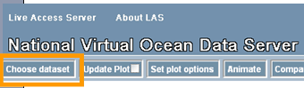
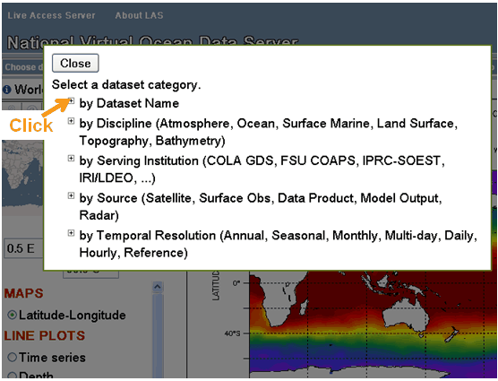
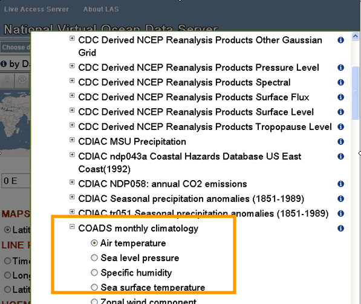
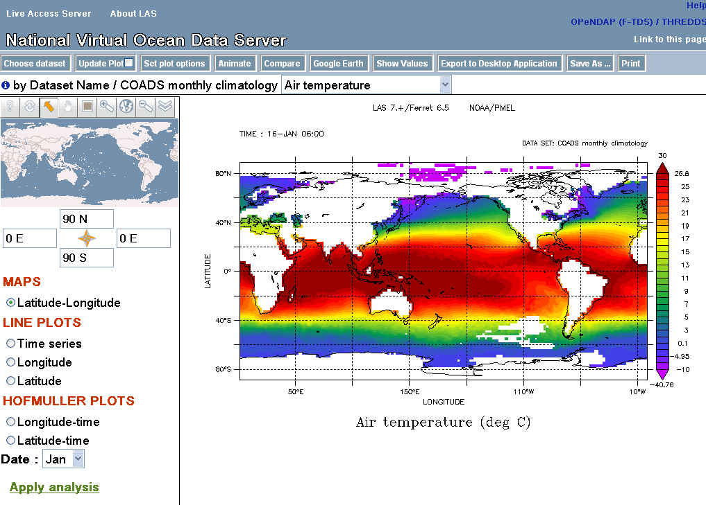
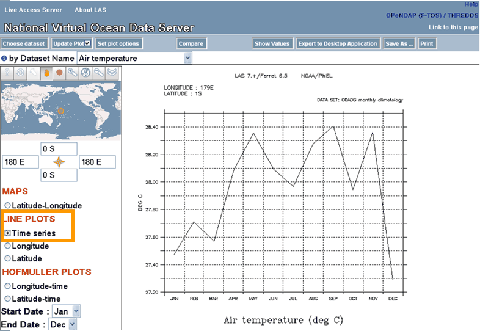
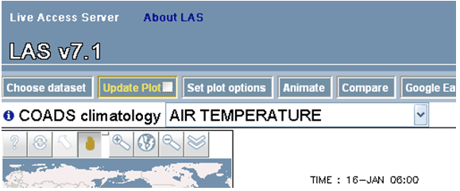
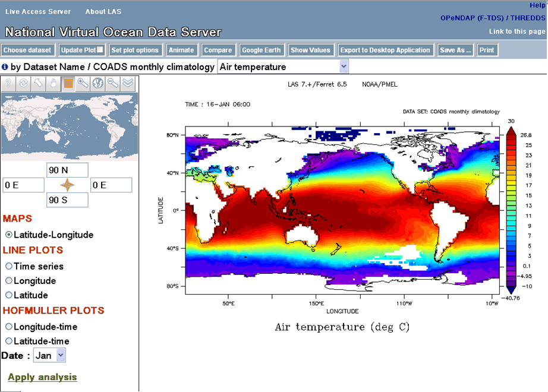

Here is the LAS V7.1 User Interface. This HELP document uses the NVODS server, which may be found at
http://ferret.pmel.noaa.gov/NVODS/ (National Virtual Oceanographic Data System)
The buttons across the top bar are for opening menus, requesting a new plot, or requesting products such as animations. When a menu is open you will often see this small icon  next to an item. Click on this icon for information. When it is next to a dataset in a dataset menu, this will bring up further information about the dataset. In an options menu, clicking the info icon brings up an explanation of the option.
next to an item. Click on this icon for information. When it is next to a dataset in a dataset menu, this will bring up further information about the dataset. In an options menu, clicking the info icon brings up an explanation of the option.
The reference map in the upper left has its own controls along the top. In the LAS interface, hover the mouse over each for a short description, and click the ? for more help with these controls. The longitude and latitude widgets below the map may be used to enter the X and Y region desired.

Getting images and data from LAS
Example: Create a 2D xy color plot of Sea Surface Temperature from the coads climatology dataset.
Select the Coads climatology dataset: Click on the "Choose Dataset" button:

The Dataset
selection tree will open. Many LAS installations use a tree of dataset categories. Click on "by Dataset Name"

and then click "Coads monthly climatology" and
"Air temperature":

LAS will use your choice of data and variable and create a Latitude-Longitude map by default:

Using the zoom
and pan reference map, you may refine the latitude and longitude displayed by the reference map; and using the selection tool the user can change the region selected. Then that region will be used when you update the plot or ask for data.
Longitude-latitude images are also interactive. This means that you can click and drag to
zoom into a particular region on the image itself. Use the browser's "Back" button to return to earlier plots.
You are now free to begin interacting with LAS. For example, clicking
"Time Series" on the left side of
the interface will result in this image:  Customizing
what you get from LAS Example: How to modify the
default values LAS uses to create an image. In this example, we will change the
specified color pallete for our AIRT plot, as well as eliminate the graticule
lines. First, to change the output size of the plot, click the "Set plot
options" button from the menu toolbar. This will open up a menu from which
you may change several options for plot creation. In the below - we have
turned off the graticules option as well as selecting a different pallete: After making the changes, and clicking
on the "OK" button, the "Update plot" button will have
changed color in the upper menu bar, like so:  When the "Update Plot"
button is yellow like above, it means that the current image is out of sync
with something in the User Interface. In this example, it is because the plot
options have changed, but it could also happen if a different variable was selected,
or a different time range was chosen, etc. In our example, after changing the
plot options, clicking the "Update Plot" button results in the below
plot. Notice that the graticule lines are no longer covering the image, and
the palette is slightly different.  There are many other options
that you can play with, and it's important to note that these options can
be "view" specific or possibly even dataset specific. In the LAS v7.1 UI, we utilize the
"Compare" button to compare data from different times or locations in a single variable, two variables in the same dataset, or variables in different datasets.
Clicking on the "Compare"
button will open a new window which will contain the LAS vizGal tool: Any plot within vizGal may be clicked, bringing it up in full-size view. By default, all four plots are of
the originaly selected date and time, but can be changed by making a selection in the Date
menu on each plot: In addition, it is now easier then
ever to see anomalies with the dataset using vizGal. Clicking the "Difference
Mode" button will allow you to easily see
how the values from the upper left panel differ from those in the other three
panels: Note the "Gallery Settings"
options on the far left. These may be used to change the plot options for all of
the plots, change to another dataset and variable, or change the view. The map may
be used to select sub-regions. The + in the far upper left-hand corner of this
page closes (and toggles to reopen) the Gallery Setttings menus, leaving more space
on the page for the four plot panels.
In the example below we choose a longitude
line plot, use the "Plot Options" to choose thicker blue lines, and turn on
"Difference Mode" to draw the difference from the upper left plot at each of
three other times.
Each frame also has its own
"settings" button. This opens an options box, which may be dragged to another
location on the page.
From the v7.1 UI, it is also quite
easy for you to view data as an animation or movie. Clicking the "Animation"
button will bring up a dialog for you to specify the desired length of
the animation: Once the Time range is selected,
and the "Submit" button pressed, each frame of the download will begin
loading, and will animate as loaded: LAS users can also view their data
on Google Earth by clicking on the "Google Earth" button. This will
bring up the current image inside of Google Earth: NOTE: The dots on
the above plot represent "placemarks" in the actual data. Clicking
on a placemark will bring up a timeseries or a vertical profile of the data
at that point.
Two buttons let you view data values or download data. "Show Values"
creates a formatted listing of the currently selected variable, including
a header describing the dataset, variable and subset in space and time. After
choosing some data, click on "Show Values", To see the following listing:
To save data in a file in NetCDF, ASCII or arcGrid format, use the "Save As"
button. This brings up a dialog to select the format of the file to be written,
and the range to save in the dimensions not chosen on the main page. In this
example, ranges of Time and Depth may be chosen.
The result will be a file to download. The remaining button at the
top of the User Interface is "Export to Desktop Application". This button
shows you a page showing the OPeNDAP URL for the data selected and how it can
be opened with Ferret, GrADS, and Matlab to point to the current variable and region
in space and time.
At the option of the LAS installer, the
V6 LAS User Interface may be made available. If this option has been installed, then you may bring
up the classic interface by clicking the "Use Classic LAS" link on the
right side of the v7.1 UI banner. This link will take
you to the V6 UI so that you may request vector plots and some more complex
comparisons.

Here there are options to change the plot options (plot style, color palette),
change the variable, or even choose another dataset and variable, for
comparison with the plots in other panels, either side-by-side or in Difference Mode.